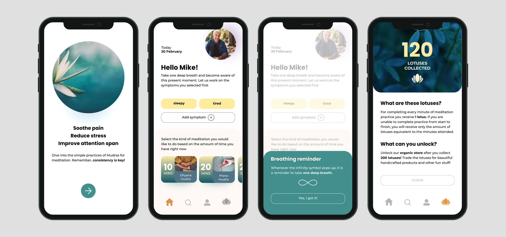
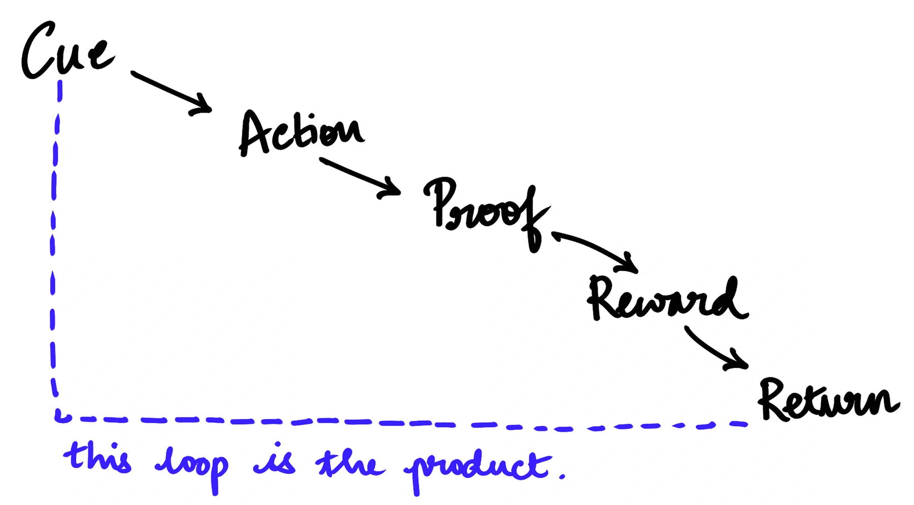
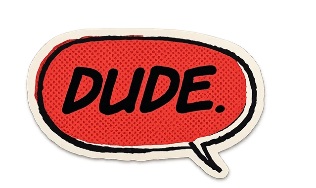
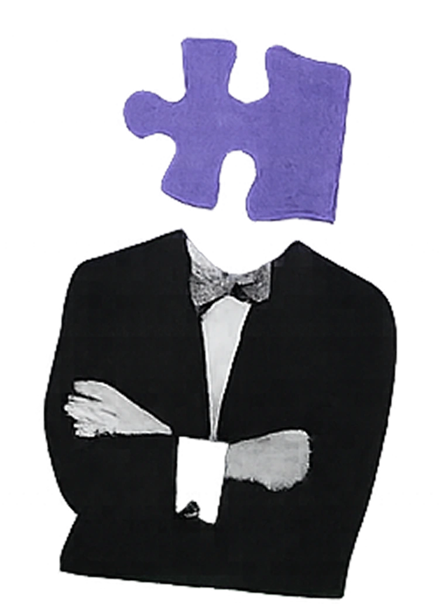

nirvana
a retention system
meditation apps don't fail because the content is bad. They fail in week one, when motivation runs out and nothing has replaced it. So I stopped designing sessions and started designing the loop that brings someone back to one.

- my role
- Research & behavioural framingRapid prototypingUI design
- method
- PretotypingCross-cultural comprehension testing
- users
- People who intend to meditate daily and don't
- status
- Self-directed, not shippedJan to May 2023
the problem
How do you convert intention into daily action?
Almost everyone who downloads a meditation app wants to meditate. That is not the constraint. The constraint is that the reward for meditating arrives weeks later, and the cost arrives every single morning.
Most platforms answer this with more content, more teachers, more courses, more categories, on the assumption that people leave because they ran out of things to listen to. The retention curves say otherwise. Drop-off concentrates in the first week, before content variety could plausibly matter.
directions considered
more and better content
Expand the library, add teachers, add themes. Rejected because it addresses boredom, and people are not leaving out of boredom, they are leaving before they have heard enough to be bored. It also makes the choosing problem worse, which is exactly what part two ended up having to fix.
Rejected: solves week six, not week onestreaks and gamification
Cheap to build. A streak turns one missed day into a loss, and guilt is a poor motivator for a practice that is supposed to be about not fighting yourself. So I kept the rewards that build up over time, but removed the punishment. Miss a day and your progress stays where it was, and it never resets to zero.
Used in part: kept the rewards, dropped the penaltyexternal reinforcement until the habit holds
Treat intrinsic motivation as something that arrives late, and design a scaffold that carries the user until it does: a cue they didn't have to remember, an action sized to the time they actually have, proof that it happened, a reward that accumulates, and a reason to return.
built
The reinforcement loop

time adaptive entry
The user picks length before content, from what they actually have available. Deciding how long is far cheaper than deciding which one, and it moves the hardest decision out of the moment of least capacity.
variable reward
You earn lotuses for every minute completed, and they unlock a store. The amount varies enough to stay interesting. There is no streak to break. Missing a day means you simply don't earn that day, and it never takes away what you already have.
accountability
Daily prompts arrive over direct messaging and are answered with an image. Confirming to a person is a materially stronger commitment than tapping done in an app, and it moves the cue outside the product.
when we tested it

The accountability loop running in the wild during testing. Users were sending photographic proof unprompted by the second week, the strongest signal in the whole project.

assumption
Nirvana anchors each session on a mudra, an Indian hand gesture. The whole concept rests on people across different cultural contexts being able to look at a depiction of one and reproduce it correctly, without instruction they'd have to read.
If that failed, nothing after it mattered. So I tested the assumption before designing any interface, using pretotyping. People from different cultural backgrounds were shown a gesture and asked to copy it, and I looked at whether they got it right rather than whether they liked it.
It held. That single result is what let the rest of the product proceed, and it is the reason part two could build its whole library out of drawn gestures.
What the testing indicated.
+60%
projected increase in 7-day retention, from nudges and accountability
+40%
projected increase in session completion, from time-adaptive entry
35%
projected improvement in first-week consistency
MODELLED, NOT MEASURED. These come from prototype testing with a small cohort, projected against published retention benchmarks for habit-formation products. They are directional evidence that the behavioural model works, not production results. Nirvana has never shipped to a live user base. The measured findings I do stand behind are simpler: participants completed the mudra-comprehension task accurately, and the accountability loop produced unprompted daily proof by week two.

a new problem?
The reinforcement loop got people back past the first week. Then they opened the app, faced a library of sessions, and closed it again. Reinforcement can take you one step closer but it does not give enough clarity to make a decision. That is the problem Part II was built to remove, and it is the reason these are two case studies rather than one.
see Nirvana 2.0
